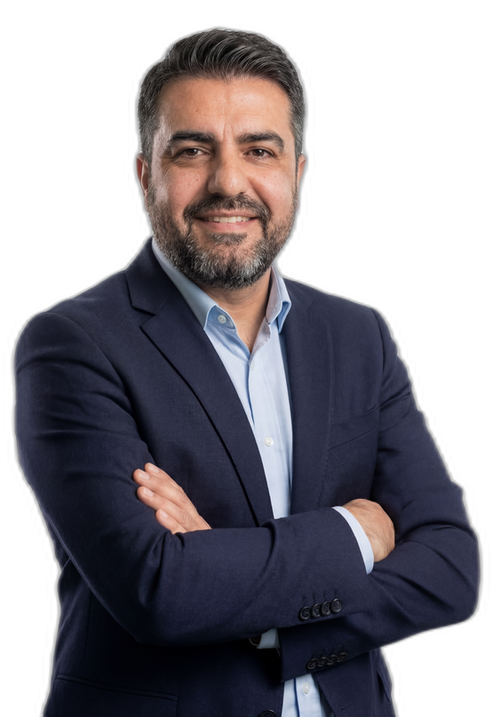
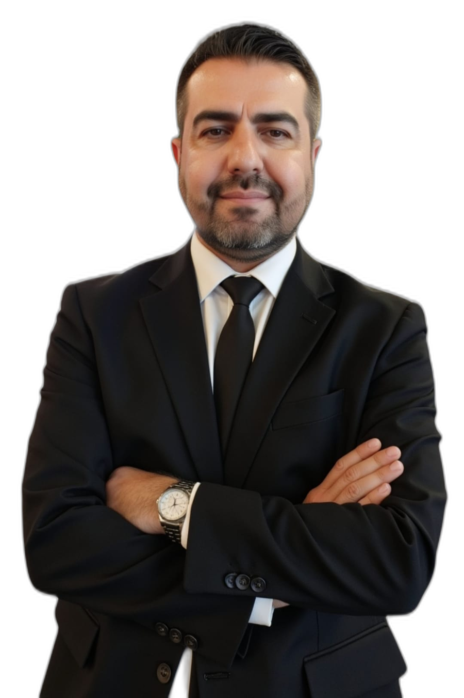

Tekirdağ sokaklarında gazete dağıtırken öğrendiğim şey hâlâ geçerli: haberi iyi okuyan, yarını ilk görür. 23 yıllık uluslararası FMCG yöneticiliğini gazetecilik keskinliğiyle birleştiriyorum — işletmenizin verilerini, satışını ve süreçlerini yapay zekâ destekli stratejiyle dönüştürüyorum.

Şirketiniz "yetenek bulamıyoruz" diyor. Peki gerçekten bulamıyor mu, yoksa ucuz işgücü mü avlıyor? İK dünyasının en çok tekrarlanan söylemini verilerle çürüten keskin bir yazı.
İK & Yetenek YönetimiÖldüğünüzde siz gidersiniz; mesajlarınız, fotoğraflarınız ve aramalarınız kalır — ve sizin adınıza ticaret yapmaya devam eder. Okyanus ötesindeki sunucularda çürümeyen bir dijital kadavra. Dijital mirasınızı kim yönetecek?
Dijital Miras & Veri EtiğiRakibiniz üretim verinizi, fiyat listenizi, tedarikçinizi — sizden önce biliyor. Modern ticaretin istihbarat savaşına dönüştüğü çağda, kurumsal kararlarınızı veriyle korumanın yolları.
Ticaret & Veri İstihbaratıBir ustabaşının sözü, on beş yıllık bir ekonominin özetiydi: "Avrupa hapşırsa, biz zatürre oluyoruz." Türkiye'nin ihracat kırılganlığı neden bir politika hatası değil, kolektif bir tercih?
İhracat & Tedarik ZinciriEkip "tükenmiş" diye rapor sunamıyor çünkü o şirkette kırılmak lüks. Dayanıklılık eğitimi bir broşürden mi ibaret, yoksa gerçek bir kurum kültürü mü? Yöneticilerin okuması gereken bir yazı.
Liderlik & Kurum KültürüYayınınıza imza atan, okuru tutan, veriyle beslenen özgün ekonomi & strateji analizleri. Editör kuruluna hazır içerik.
Süreçlerinizi ve verimliliğinizi yapay zekâ ile dönüştürün. Sonuç: daha az maliyet, daha hızlı karar, daha yüksek performans.
Medya ve kurum ekiplerinizi, içerik üretiminde yüksek verimlilik sağlayan yapay zekâ araçlarıyla donatın. Uygulamalı eğitim.
FMCG ve satış ekipleri için operasyonel verimlilik, fiyat-gelir optimizasyonu ve yapay zekâ destekli karar sistemleri.
Etkinliğinize, 23 yıllık FMCG deneyimini ve gazetecilik anlatımını taşıyan bir konuşmacı. Panel, açılış, atölye — salona değer katan program.
Markanızın sesini medyada doğru yönetin: içerik stratejisi, medya ilişkileri ve dijital iletişim tek çatı altında.
TİMBİR Akademi'nin düzenlediği ücretsiz çevrim içi eğitimde, gazetecilikte yapay zekânın temel ve ileri düzey uygulamaları; Gelecek Yönetim Gazetesi İmtiyaz Sahibi ve Dijital Dönüşüm & Verimlilik Danışmanı Erim Onan tarafından aktarıldı.
Ajans Urfa'nın gündem haberinde, TİMBİR Akademi'nin basın mensuplarına yönelik yapay zekâ eğitiminde Erim Onan'ın eğitmen olarak yer aldığı, medya sektöründe dijital dönüşümün önemi vurgulandı.
Doğu Gazetesi haberinde, Erim Onan'ın uluslararası firmalardaki yöneticilik tecrübesini ve yapay zekâ entegrasyonu bilgisini basın mensuplarıyla paylaşacağı; verimlilik artırma stratejilerine odaklanacağı aktarıldı.
Özgün Medya Ajansı'nın kapsamlı haberinde Erim Onan'ın Unilever ve La Lorraine gibi uluslararası firmalarda yöneticilik yaptığı; günümüzde işletmelere yapay zekâ destekli satış, operasyon ve stratejik yönetim danışmanlığı sunduğu detaylı olarak aktarıldı.

Kariyerim, Tekirdağ'ın sokaklarında liseli bir gencin donmuş ellerinde gazete dağıtmasıyla başladı. Her sabah ilk işim, dağıttığım gazetenin köşe yazılarını okumaktı; o yazılar bana bilgiden önce merak etmeyi öğretti. Yıllar sonra, 25 yıllık beyaz yakalı profesyonel kariyerimin ardından, o çocukluk hayalini gerçekleştirerek Gelecek Yönetim Gazetesi'nin temellerini attım.
O liseli dağıtıcı bugün, 25 yıllık uluslararası kurumsal kariyerin ardından, aynı merakı şirketlere taşıyor: veriyi stratejiye, bugünü yarına çevirmek. Çukurova Üniversitesi eğitimim ve Indigonix System Intelligence'ta Partner – Commercial Transformation & FMCG Lead olarak yürüttüğüm çalışmalar, bu birikimi kurumsal dönüşüm projelerine taşıyor.
Medya profesyonellerine yapay zekâ destekli içerik üretimi eğitimleri veriyor, TİMBİR Akademi'de eğitmenlik yapıyorum. Hızlı tüketim malları (FMCG) ve satış ekiplerinde operasyonel verimlilik, fiyat-gelir optimizasyonu ve yapay zekâ ile karar destek sistemleri üzerine kurumlara danışmanlık sağlıyorum.
Kurumlar için en büyük risk, yarını bugünün verileriyle yönetmektir. İşte tam burada devreye giriyorum: köşe yazılarım ve danışmanlıklarımla ekonomi, teknoloji, strateji ve gelecek vizyonu alanlarında katma değer üretiyorum.
Liseli yıllarında donmuş ellerinde gazetelerle köşe yazarlarının bilgeliğini keşfetti; gazetecilik tutkusu burada filizlendi.
Satış ve operasyon yönetiminde, uluslararası firmalarda yöneticilik deneyimi kazandı. Çukurova Üniversitesi'nde temellenen akademik birikim, kurumsal hayatta pratiğe dönüştü.
Çocukluk hayalini gerçekleştirerek gazetenin temellerini attı, vizyoner yazarlarla yola çıktı. Bugünü anlamak, yarını yönetmek misyonuyla yayın hayatını sürdürüyor.
Partner – Commercial Transformation & FMCG Lead olarak hızlı tüketim malları sektöründe ticari dönüşüm ve yapay zekâ destekli verimlilik projelerini yönetiyor.
Ve yolculuk başladığı yere döndü: gazeteye. Ama bu kez gazeteyi dağıtan değil, yöneten. Tekirdağ'dan çıkan çocuk, hayalini tahta oturttu — TİMBİR Akademi'de yapay zekâ eğitimleri veriyor, köşe yazılarıyla iş dünyasına katma değer katıyor.